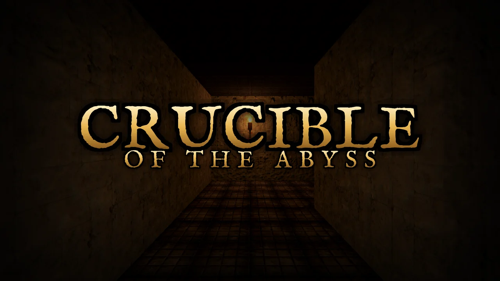
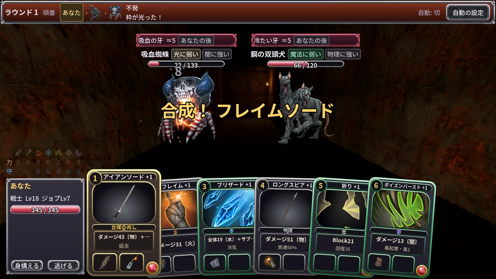
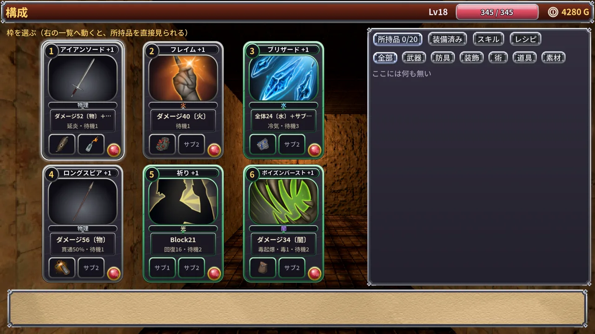
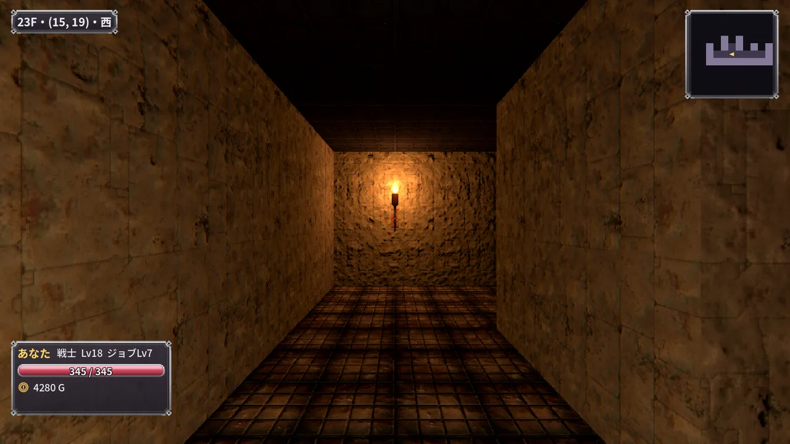
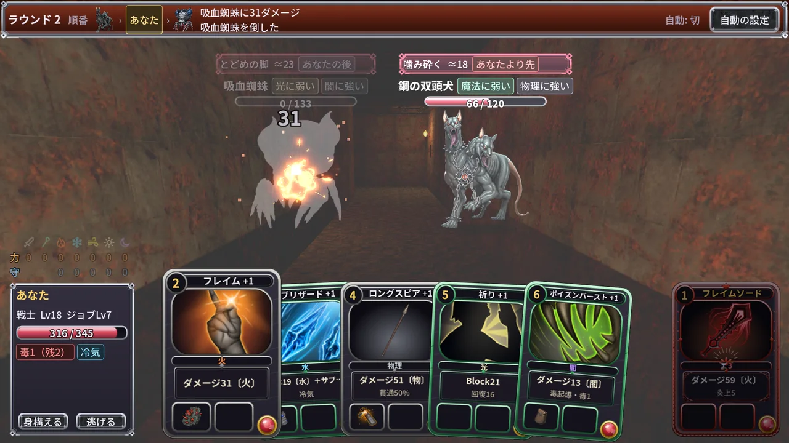
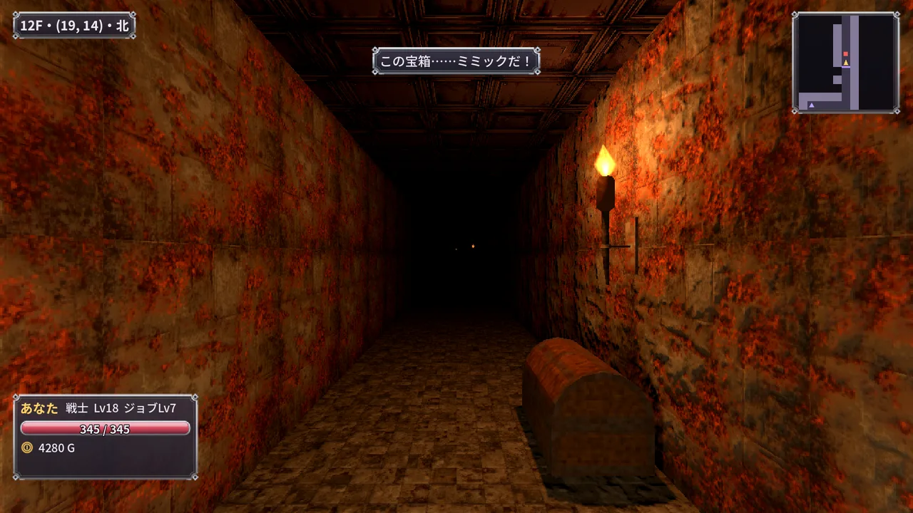
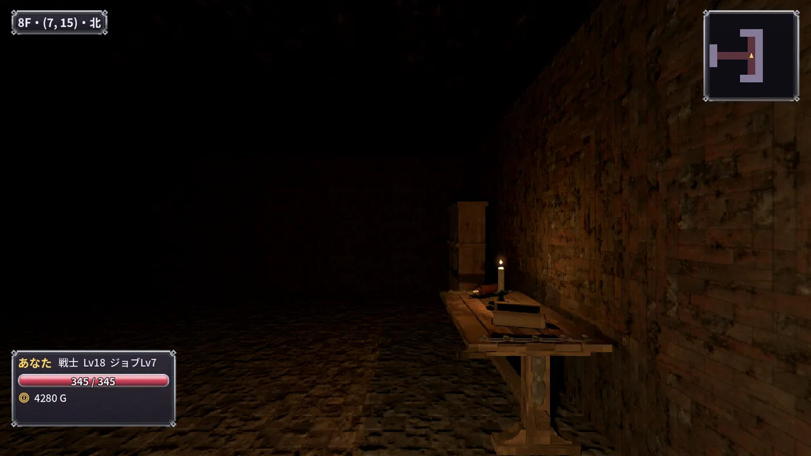
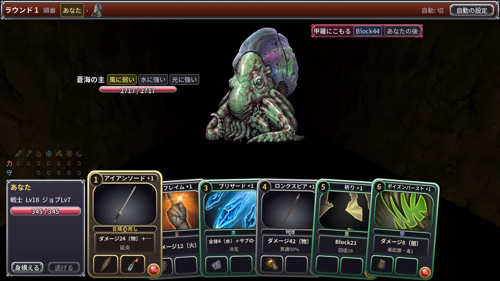

部品を組み、 溶かし、ひらめけ。
一人称の迷宮を1マスずつ潜り、行動の枠に部品をはめて戦う、ダークファンタジーのダンジョン RPG です。決まった組み合わせで戦えば、部品は溶け合って新しい力に生まれ変わる。50階の深淵の底で、坩堝が待っています。

予告編（25秒・英語の画面・音が出ます）
行動は、部品で組む。
行動の枠に、剣や杖などのメイン部品と、砥石や結晶などのサブ部品をはめる。組み合わせで威力も属性も効き目も変わります。何が起きるかは、試すまで分かりません。
戦いの中で、合成とひらめき
決まった組み合わせの枠で戦うと、部品が溶け合って新しい部品になる「合成」。戦いの中で技を思いつく「ひらめき」。約250種類の部品とスキル、74通りの合成とひらめきがあります。
一人称の迷宮を、1マスずつ
罠の踏み板、壁の隠し扉、鉄格子とレバー、碑文の手がかり、宝箱に化けたミミック。灯りは本当の明るさで描かれ、松明のそばは見通しがよいぶん、敵にも見つかりやすくなります。
50階の深淵、10のエリア
5階ごとに姿を変える10のエリア。鍵のかかった玄室には強敵が、エリアの底には主が待ちます。倒れれば持ち物を落として街で目を覚ましますが、また潜って取り戻せます。
職業と属性を読む
戦士・盗賊・魔法使い・僧侶と、2つの上級職。火・水・風・光・闇と物理・魔法の7つの属性。敵の型から弱点を読み、前列と後列の並びを見て、どの枠を使うかを決めます。

戦いの中で、部品が溶け合う
アイアンソードに火炎瓶と油のつぼをはめて戦うと、フレイムソードに生まれ変わります。

6つまで増える枠に、メインとサブ
1つの枠にメイン1つとサブ2つ。枠はギルドの大事なクエストで6つまで増えます。合成できる組み合わせは光って教えてくれます。

松明の灯る石の通路
灯りのない所は本当に暗い。ランタンに覆いをかければ闇に紛れられますが、罠も見えなくなります。

7つの属性と、敵の型
敵の型で弱点が決まります。効く属性を当てれば、戦いはぐっと短くなります。

調べれば、分かることがある
前のマスを調べると、罠や、宝箱に化けたミミックが見つかることがあります。

エリアごとに変わる迷宮
5階ごとに壁も床も、待っている敵も変わります。

エリアの底で待つ主
エリアの最後の階では、下り階段の前に主が待っています。
- 行動の枠に部品をはめて組む、ターン制の戦闘
- 合成とひらめきで増えていく、自分だけの部品
- 戦士・盗賊・魔法使い・僧侶と2つの上級職。倒した数で上がるジョブレベル
- 前列と後列。後ろの敵に届くのは弓と術だけ
- 245体の敵（色違いと強敵・エリアの主を含む）
- 日本語と英語。キーボード・マウス・ゲームパッドで遊べる